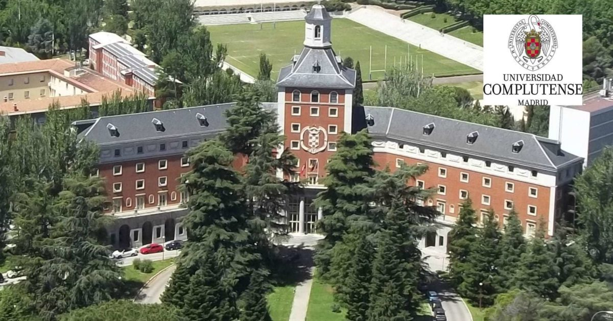
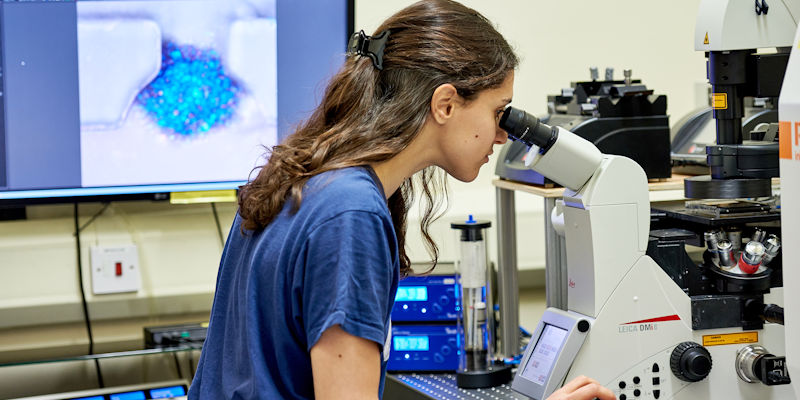
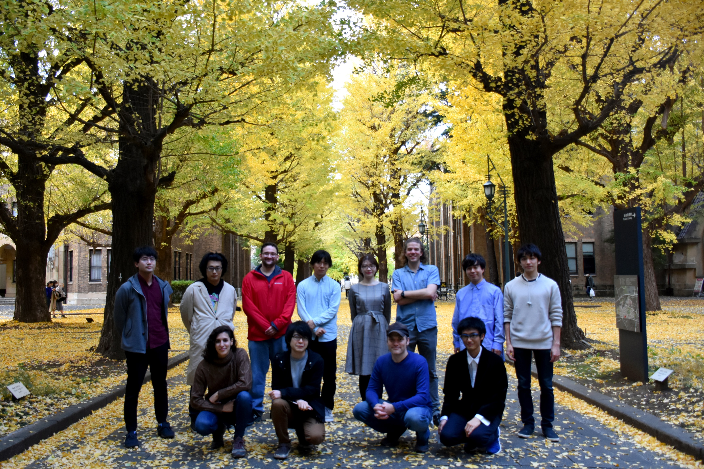
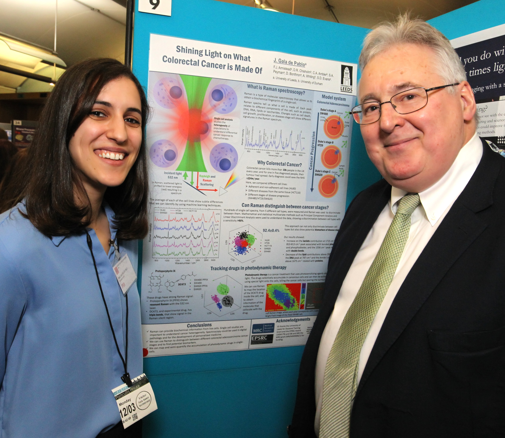
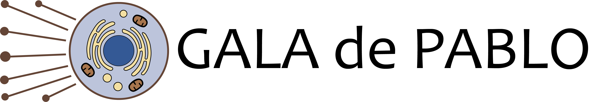

Julia Gala de Pablo, PhD
Education

I studied Physics and Biochemistry at the University Complutense of Madrid (2009-2015).
I was born in Madrid, Spain. After High school, I joined a BsC in Physics at the University Complutense of Madrid. A year later, I joined a BsC in Biochemistry, and I studied both BScs simultaneously. In 2012, I obtained the Erasmus Mundus scholarship and moved to Leeds for a year, where I joined the Molecular and Nanoscale Physics research group (University of Leeds) for a summer research scholarship. Years later, after finishing my BsCs (2015) I returned to the University of Leeds for a PhD.
PhD

At the University of Leeds, I worked with an integrated confocal fluorescence and Raman microscope.
I joined the Molecular and Nanoscale Physics Group in 2015 as a PhD student, and worked on my PhD for the following three and a half years. During my PhD, I used Raman spectroscopy for biochemical phenotyping of live single-cells of different stages of colorectal cancer, with the findings published in the Journal of Raman spectroscopy (2018). I also studied the accumulation and photoactivation of a photosensitiser in single colorectal cancer cells, with both Raman and fluorescence (fluoRaman, a term that has been referenced in the literature) and for the single-cell dynamics of the photosensitiser activation using Raman spectroscopy. These findings were published in the Analyst (2019 and 2020). I also became proficient on the main chemometric tools for its analysis, including Principal Component Analysis, Classification Trees, Linear Discriminat Analysis or Support Vector Machines. During my PhD, I also worked with soft lithography microfluidics device fabrication and compatibility with Raman spectroscopy, co-authoring a publication of the Raman analysis of the oil uptake of PDMS in a microfluidic device (SN Applied Sciences, 2020). I also collaborated in multiple microfluidic deformation cytometry studies (Biophysical Journal 2019, Scientific Reports 2020). I secured 4 travel grants and a conference bursary, and I was awarded 2 poster prizes (1st and 2nd). I was also invited as a speaker to SPEC2018, and was selected for STEM for Britain to present my research at the British Parliament. For the latter, I granted a BBC Radio Leeds interview. I finished my PhD in September 2019.
JSPS Postdoctoral Fellowship

Some of the members of Hiramatsu-team posing under the gingko leaves at the University of Tokyo (2020). Back row (left to right): Shigekazu Takizawa, Ryo Kinegawa, Phil McCann, Ryo Nishiyama, Risako Kameyama, Jorgen Walker Peterson, Yuichi Yajima, Tatsuya Tajima. Front row: Julia Gala de Pablo, Kotaro Hiramatsu (team leader), Matt Lindley and Ryuji Nakao.
At the end of my PhD I secured a standard JSPS fellowship and a grant-in-a-aid to move to the University of Tokyo, working in Goda Lab as part of Kotaro Hiramatsu's team. This was an exciting opportunity for me to explore non-linear spectroscopy, working on a lab-made Fourier Transform Coherent anti-Stokes Raman scattering system, as part of Kotaro Hiramatsu's team. We used FT-CARS for high-throughput vibrational flow cytometry and sorting. I published an Account on high throughput Raman flow cytometry (journal cover), and co-authored a recently submitted study on high throughput Raman activated cell sorting in the fingerprint region (BioRxiv). I used microalgae cells as a model system, working mainly with Euglena, Haematococcus and Muriella cells for paramylon, astaxanthin and starch detection respectively. DUring this time, I got invited as a speaker to SciX2021 and secured a SAS travel grant.
Science engagement

STEM for Britain presentation to members of the Parliament. Julia Gala de Pablo (left) and Dr. Stephen Benn (right), RSB's director of parliamentary affairs (2018).
I have participated in science engagement events, including events organized by the IoP, the RSC, Pint of Science, STEM for Britain,
and SPIE. I also worked with year 12 students at the Physics and Astronomy Work Experience Week, and will be giving a talk in a
Japanese high school this September. I was also the Committee Chair of the Serendipity Lab Twitter Workshop and co-chaired the
2020 Serendipity Symposium.
